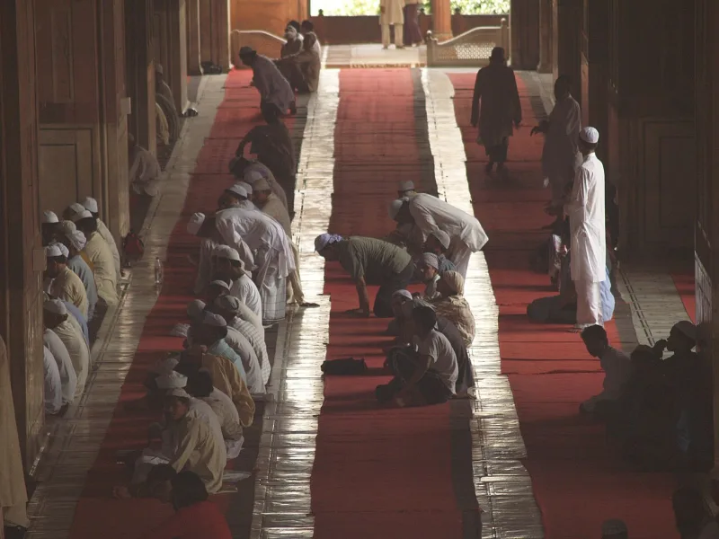
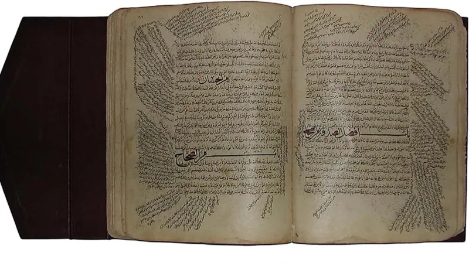

The facts sit in Islam's own trusted sources. You can make this point from their books alone.
Surah al-Fatiha is recited in every unit of the five daily prayers. That is at least seventeen times a day.
It ends by asking for the path of those God favoured, "not of those who have earned anger, nor of those who go astray" (Quran 1:7).
The identification comes from Muhammad. "Those who have earned the anger are the Jews, and those who are led astray are the Christians" (Jami at-Tirmidhi 2954, graded hasan, from Adi ibn Hatim).
Ibn Kathir records that the scholars of tafsir held this view. It stands in Tafsir al-Jalalayn and in mainstream Salafi teaching today.
The New Testament's posture toward outsiders runs the other way. "Love your enemies and pray for them" (Matthew 5:44).
Paul writes that "my heart's desire and prayer to God for them is that they may be saved" (Romans 10:1).
Many teachers argue the verse names types, not peoples. Those who earned anger are all who know the truth and leave it.
Those astray are all who strive without knowledge. Jews and Christians appear in the hadith as historical examples, not as the only targets, and Muslims who fit are included too.
The prayer asks for guidance; it does not curse anyone. And the Quran elsewhere praises righteous People of the Book (3:113-115).
They admit it themselves, from Muhammad's own mouth. The categorical reading is the modern softening, not the classical mainstream.
The defence is genuine, but it does not remove Jews and Christians from the meaning. It widens the condemnation while keeping them as its examples.
For evangelism the point is posture, not scoring: daily self-definition against these communities, versus daily prayer for them.
"I pray for you most days. Would it surprise you to know that?"


They say the verse names two kinds of people, not two peoples.
Many Muslim teachers argue that the verse names categories, not peoples. Those who earned anger are all who know the truth and abandon it. Those astray are all who strive without knowledge.
Jews and Christians appear in the hadith as examples from history, not as the only targets. Muslims who fit the descriptions are included just as much. The prayer, they stress, asks for guidance. It is not a curse on anyone, and nothing in it asks harm for Jews or Christians. Modern teachers, such as Najam Academy, note that the Quran elsewhere praises righteous People of the Book (3:113-115). So 1:7 cannot be a blanket condemnation.
Strong for you: the naming comes from Muhammad, but use it for posture.
The naming is Islam's own. It comes from Muhammad's mouth in a hasan hadith, that is, a good one. Ibn Kathir endorses it as the view of the scholars of tafsir. The reading by category is the modern softening, not the classical mainstream.
It is graded admitted because the substance is affirmed inside Islamic tradition. The canonical commentary does name Jews and Christians. The defence that they are examples rather than the whole is genuine, but it does not take them out of the meaning. It widens the condemnation while keeping them as its models.
For evangelism the point is posture. One community defines itself daily against the biblical peoples. The other prays daily for the lost.